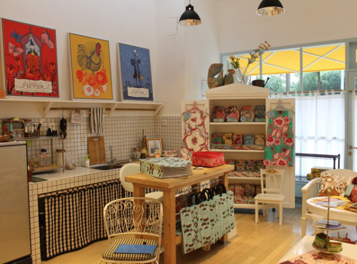
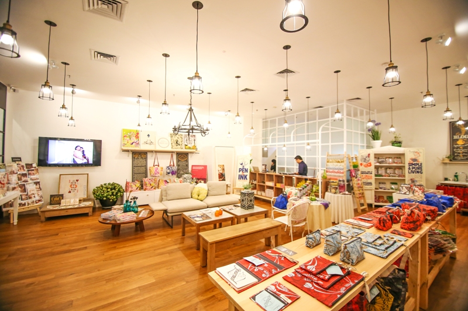

<!DOCTYPE html>
<html>
	<head>
		<!-- Standard Meta -->
		<meta charset="utf-8" />
		<meta http-equiv="X-UA-Compatible" content="IE=edge,chrome=1" />
		<meta name="viewport" content="width=device-width, initial-scale=1.0, maximum-scale=1.0">
		<link rel="icon" type="image/x-icon" href="../assets/PICS/TL_Favicon.png">
		<!-- Site Properities -->
		<title>Tulisan</title>
	  
		<link href="../assets/css/bootstrap.min.css" rel="stylesheet">
		<link href="../assets/css/font-awesome.min.css" rel="stylesheet">
		<link href="../assets/css/syncard-inject.css" rel="stylesheet">
	</head>
	<body>

		<div class="container">
			<header class="parent"></header>

			<main class="parent clear yellow-flex"></main>
	
			<footer class="parent clear"></footer>
		</div>

		<!-- Script collection -->
		<script type="text/javascript" src="../assets/js/jquery-3.2.1.min.js"></script>
		<script type="text/javascript" src="../assets/js/jquery-ui-1.10.0.custom.min.js"></script>
		<script type="text/javascript" src="../assets/js/bootstrap.min.js"></script>	
		<script type="text/javascript" src="../assets/js/imagesloaded.pkgd.min.js"></script>	
		<script type="text/javascript" src="../assets/js/partial.js"></script>	

		<!-- page script -->
		<script type="text/javascript">
			loadStory();

			function loadStory(){
				var html = '';

				var tabHeader  = [
					{"groupId": "about", "group": "About" , "groupStyle": "bold", "state": "active"},
					{"groupId": "values", "group": "Values" , "groupStyle": "italic", "state": ""},
					{"groupId": "artist", "group": "Artist" , "groupStyle": "italic", "state": ""},
					{"groupId": "process", "group": "Process" , "groupStyle": "italic", "state": ""},
					{"groupId": "store", "group": "Store" , "groupStyle": "italic", "state": ""},
				];

				var tabContent = [
					{ "groupId": "about", "content" : {
						"title" : "About Tulisan",
						"picture" : "work.jpg",
						"description" : [
											'<b><i>Tulisan</i></b> means ‘handwriting’ in Bahasa Indonesia. This simple word is symbolic of making your mark while' +
											'staying true to yourself and sharing your experience with others. To those who wear our collections, it is about' +
											'colorful storytelling through handcrafted products made with love in small batches. Tulisan began as a' +
											'home-based art studio in Jakarta filled with dedicated people who simply believed in each other and were determined' +
											'to follow their dreams. \r\n\r\n',

											'Jakarta is not London, Paris, New York or any other great city. Despite its pollution and bumper-to-bumper' +
											'traffic, living in Jakarta is about taking chances, being close to family, and having true friends. It is a melting pot' +
											'where you will find many inspiring minds and undiscovered talent. Appearances are often deceiving. This is' +
											'definitely the case with a chaotic city like Jakarta, but once you delve into its inner beauty you realize that this' +
											'is a place brimming with vitality and an abundance of untapped creative energy. \r\n\r\n',
										
											'From start to finish, each <b><i>Tulisan</i></b> product is made by a team of passionate artists in Indonesia. My team' +
											'consists of determined individuals who honor their intuitions and project the very best of their being. Many of' +
											'them have crossed over from their academic or professional background to pursue what they do today for' +
											'Tulisan. Together we empower each other to achieve what we never thought was possible. The resulting experience' +
											'is often a nerve-racking journey to self-discovery. \r\n\r\n',
											
											'Through Tulisan, I hope to convey a different perspective on Jakarta and to present honest creations from the' +
											'heart of its people. \r\n\r\n',

											'Warmest regards \r\n\r\n',

											'<b>Melissa Sunjaya</b> \r\n' +
											'Founding Artist and CEO of Tulisan'
										],
					}},

					{ "groupId": "values", "content" : {
						"title" : "Our Values",
						"picture" : "ourvalue-banner.jpg",
						"description" : [
											'<b>Empowering Others</b>\r\n',

											'We are dedicated to enriching our community by investing our time in training and employing local artisans' +
											'and talents, with an aim to provide them a fair living with benefits that exceed market standards. \r\n\r\n',
										
											'<b>Celebrating Individuality</b>\r\n',

											'We design our products to be simple and pure, then layer them with artist-illustrated editions to celebrate indi' +
											'viduality. Each creation is constructed by hand in small batches, with artisanal craftsmanship. \r\n\r\n',
											
											'<b>Caring for Our World</b>\r\n',

											'We strive to improve the quality of our work by being responsive of our surroundings and by using sustainable ' +
											'design principles to foster a healthier environment. \r\n\r\n',
										],
					}},

					{ "groupId": "artist", "content" : {
						"title" : "About the Artist",
						"picture" : "3.jpg",
						"description" : [	
											'<div class="col-md-10 col-md-offset-1">' +
												'<p class="syn-center"><b>' +
													'Melissa was born and raised in Jakarta. She began her studies in graphic art at Universitas Trisakti' +
													'(in Jakarta) and continued her education at the Art Center (in Switzerland and California). Her passions' +
													'are reading, writing, drawing, and traveling.' +
													'\r\n\r\n' +
													'' +
												'</b></p>' +
											'</div>' +
											'<div class="clearfix"></div>' +
											'\r\n\r\n' +
											'My desire is to create a wearable medium for visual impressions. With a passion in typography, lettering and' +
											'illustrating decorative embellishments, I believe that fluidity, weight and tension in every line stroke are instrumental' +
											'in creating a memorable impression. The inspiration of most designs are taken from my travels. I am' +
											'constantly fascinated by details in my surroundings such as the old cast iron ventilation grilles, quirky shapes of' +
											'botanical specimens, faded colors of vintage stamps or simply fine handwritten scripts on old postcards. I fuse' +
											'traditional and contemporary elements from varying cultures in my work. For instance, I love layering fresh' +
											'Scandinavian color palettes over architectural patterns from the Middle East.' +
											'\r\n\r\n' +
											'I believe that the groundwork of ‘Tulisan’ sprung from my wonderful childhood, in which I was blessed with the' +
											'freedom to think and express myself. Born in 1974 and raised in Jakarta, my family lived in a quaint pavilion' +
											'attached to a vintage colonial house where my grandmother lived and worked as a passionate dressmaker for' +
											'the expatriate community. I used to watch her making pillows, quilt covers and hats in a room that filled me' +
											'with wonder and nurtured my imagination. My father, on the other hand, had a passion for photography and' +
											'stencil application which took place in his workshop where his tools were always neatly organized in small color' +
											'coded boxes. This was where I learned the importance of meticulous grids and pattern precision. My father' +
											'taught me many creative skills, the most memorable of which was the skill of making a calligraphy pen out of a' +
											'simple felt tip pen.' +
											'\r\n\r\n' +
											'Learning these skills at the tender age of six made me feel comfortable in sketching and using calligraphy' +
											'strokes. My mother had always been a home decorator, a perfectionist and a determined entrepreneur. She' +
											'loves to restore discarded products and turn them into chic interior accents. My mother, Didi Hersubeno, and I' +
											'complement each other and have collaborated on several professional projects. We established ‘Tulisan’ together,' +
											'and are equally dedicated to delivering excellence in design, production, and customer care.' +
											'\r\n\r\n' +
											'It is my long term dream to create handmade products in Indonesia with an original twist. With ‘Tulisan’ I am' +
											'able to do just that. So I would like to thank our loyal customer base for believing in our vision and my entire' +
											'creative team for their dedication to making our workshop colorful and full of wonderful energy.' +
											'\r\n\r\n' +
											'Warmest regards,' +
											'\r\n\r\n' +
											'Melissa Sunjaya\r\n' +
											'Artist and Founder of Tulisan'
										],
					}},

					{ "groupId": "process", "content" : {
						"title" : "A Labor of Love",
						"picture" : "4.jpg",
						"description" : [
											'The work we do is all about recording and transferring emotions through a detailed, multi-step process. From' +
											'start to finish, each Tulisan product is made with love by a team of passionate artisans. Each new collection' +
											'follows a meticulous eight-step process:' +
											'\r\n\r\n' +
											'<b>Step 1. Sketching</b>\r\n' +
											'As a theme emerges, pen meets paper in a sketchpad to form the figures and details used in the pattern. Each' +
											'sketch is like a fragment of a dream, a wish or a prayer.' +
											'\r\n\r\n' +
											'<b>Step 2. Writing the story</b>\r\n' +
											'The pen and ink drawings unravel a personal tale, just like a dream, and form short stories that accompany each' +
											'printed edition. A narrative is developed to accompany each design as a way of bringing the characters and' +
											'elements to life.' +
											'\r\n\r\n' +
											'<b>Step 3. Constructing the signature art</b>\r\n' +
											'The sketches are then reconstructed to form a final collage that captures the story and characters from the collections' +
											'they represent.' +
											'\r\n\r\n' +
											'<b>Step 4. Selecting and mixing colors</b>\r\n' +
											'Colors are hand selected and custom blended to create distinct color palettes that compliment the narrative of' +
											'the collection.' +
											'\r\n\r\n' +
											'<b>Step 5. The screening process</b>\r\n' +
											'By coating the screen with a photosensitive emulsion, laying the positive film of the final art on top of the screen,' +
											'and exposing it to the sun or ultra-violet light a screen is created. The final screen makes a negative image for' +
											'the ink to seep through onto the canvas. Depending on the palette, several screens can be made to create a single' +
											'pattern.' +
											'\r\n\r\n' +
											'<b>Step 6. Registering additional colors</b>\r\n' +
											'After the first color dries the next one is layered atop, dried and so on. The process of applying multiple colors' +
											'is a meticulous one and the hand screening process makes registering colors difficult as weight, speed and various' +
											'factors influence the opacity and consistency of the print.' +
											'\r\n\r\n' +
											'<b>Step 7. Editing the collection</b>\r\n' +
											'The cut fabric is then sewn and stitched to create the final products: bags, totes, boxes, pouches, organizers, etc.' +
											'Each style is edited and produced in small batches making each collection a limited edition.' +
											'\r\n\r\n' +
											'<b>Step 8. The traveling wish</b>\r\n' +
											'Tulisan products are designed to be a messenger of a dream or a wish to others. When they touch another' +
											'person’s life, they become a work of art and bear the story of their guardian.'
										],
					}},

					{ "groupId": "store", "content" : {
						"title" : "Store",
						"picture" : "",
						"description" : [
											'The Tulisan store, located in Jakarta, is home to the Tulisan creative team and has been designed to be an interactive' +
											'shopping experience. The store has the feel of an eclectic home complete with a veranda, living room, and' +
											'pantry area displaying the colorful thematic illustrations and products.'+
											'\r\n\r\n' +
											'The products are delicately nestled amongst Melissa’s private collection of vintage furniture to allow customers' +
											'to imagine how Tulisan products can be integrated into their own homes.' +
											'\r\n\r\n' +
											'' +
											'\r\n\r\n' +
											'<b>Flagship Store & Creative Headquarter</b>\r\n' +
											'Darmawangsa Square, The City Walk\r\n' +
											'Ground Floor, Unit #24\r\n' +
											'Jakarta 12160, Indonesia\r\n' +
											'+ 62 21 727 80235\r\n' +
											'Operation hours: 9 a.m. to 9 p.m. (GMT +7)' +
											'\r\n\r\n' +
											'' +
											'\r\n\r\n' +
											'Tulisan Plaza Senayan\r\n' +
											'Jalan Asia Afrika No. 8, South Jakarta\r\n' +
											'on Wednesday, 28 October,\r\n' +
											'10.00am – 10.00pm'
										],
					}},
				];

				html = '<div id="about-page" class="col-md-8 col-md-offset-2">';
				html = html + 
				'<div class="tab-header">' +
					'<ul>';

				for(var loop=0; loop<tabHeader.length; loop++){
					html = html + '<li class="' + tabHeader[loop].groupStyle + '"><span class="tab-button ' + tabHeader[loop].state + '" t-target="#' + tabHeader[loop].groupId + '">' + tabHeader[loop].group + '</span></li>';
				}

				html = html + 
					'</ul>' +
				'</div>';

				for(var loop=0; loop<tabContent.length; loop++){
					html = html + 
					'<div class="tab-container ' + tabHeader[loop].state + '" id="' + tabHeader[loop].groupId + '">' +
						"<div class='blog-container'>" +
							"<div class='blog-box justify norm fontserif'>"+
								"<h1 class='fontserif'><b>" + tabContent[loop].content.title + "</b></h1>";

					if(tabContent[loop].content.picture != ""){
						html = html + 
						"<div class='blog-pic margin-top'>" +
							"" +
						"</div>";
					}

					for(var loopY=0; loopY<tabContent[loop].content.description.length; loopY++){
						tabContent[loop].content.description[loopY] = tabContent[loop].content.description[loopY].replace(/(?:\r\n|\r|\n)/g, '<br />');
						html = html + 
						"<div class='blog-description'>"+
							tabContent[loop].content.description[loopY] +
						"</div>";
					}

					html = html + 
							"</div>" +
						"</div>" +
					'</div>';
				}
				
				html = html + "</div>";
				html = html + "<div class='clearfix'></div>";

				$("main").html(html);

				$(".tab-header .tab-button").unbind().on("click", function(){ 
					tabChange($(this));
				});
			}
		</script>
	</body>
</html>